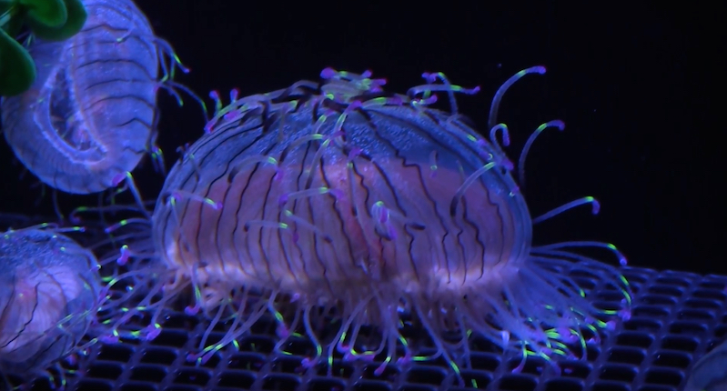
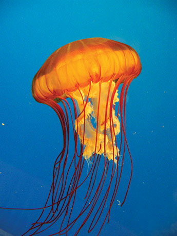

Jellyfish are some of my favorite marine animals because of how they just flow with the water. They have no brains, so they just move freely without thoughts, which is something I wish I could have. While many jellyfish do have venomous tentacles, lots of species don’t. Later, I will talk about the venomous ones, but for now, let's talk a little about the non-venomous jellyfish that you could even swim with. All jellyfish have stinging cells, but some possess ones too mild to affect humans. For example, moon jellyfish and cannon jelly. There’s a lake you can swim with jellyfish in called Jellyfish Lake in Palau, as well as others in Indonesia. Jellyfish are such fascinating animals, and their existence is so interesting.
 | Name | Habitat |
|---|---|
| Box Jellyfish | Northern Australia and Southeast Asia |
| Irukandji Jellyfish | Australia, Southeast Asia, South Africa, and Hawaii |
| Lions Mane Jellyfish | North atlantic and Arctic |
| sea nettle | Eastern Coast of North America |
| Flower Hat Jellyfish | Coastel waters or Japan and Brazil |
To find more info on the next 5 most venomous jellyfish click the link Jellyfish info
To find more info on jellyfish in general click the link Jellyfish facts